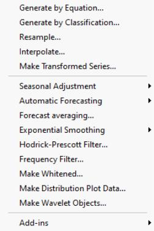
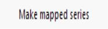

Series Procs Overview  Series procedures may be used to generate new series that are based upon the data in the original series. You may generate new series using expressions, or you may generate series by classifying the original series. When working with numeric series, you may also use series procs to resample or interpolate from the original series, to perform time series forecasting to perform seasonal adjustment or exponential smoothing, to filter the series using the Hodrick-Prescott or band-pass filters, or to output data used in constructing various distribution graphs such as histograms and kernel density plots, or data from wavelet analysis. For alpha series you may use a series proc to make a valmapped numeric series.  EViews will create a new numeric series and valmap so that each value in the numeric series is mapped to the original alpha series value.